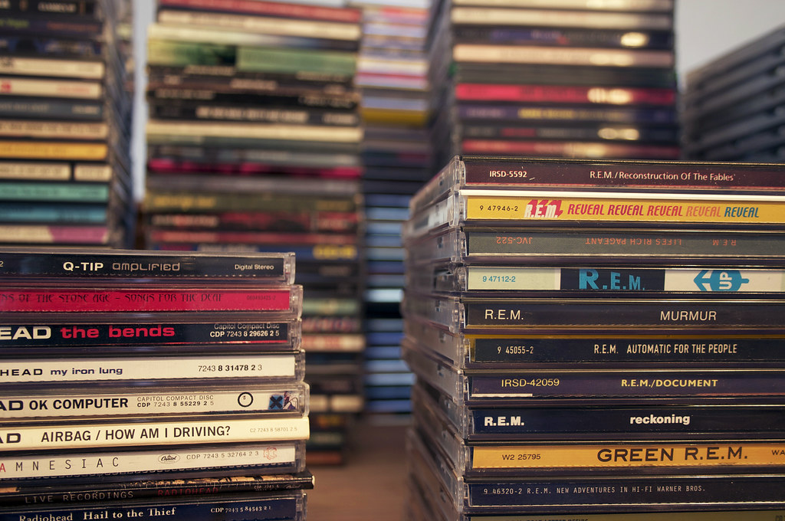

About Me

Music + Guitar
Music has always been a big part of my life. My personal favorite genres are grunge and classic rock, but I am always open to listen to anything new! Music has a vast impact on our brains, and in such can affect how the rest of our body works. I have brushed the top of the research iceberg on how music affects the alpha and beta waves in our brain, but from a non-analytic standpoint music is the thing that calms me the most and reminds me to push myself to my limits. I have recently taken up playing the guitar, and right now my favorite song to play is "You're the One" by Greta Van Fleet.

Staying Active
Staying active is one of my biggest priorities, and I love doing so in a variety of ways. I grew up playing soccer, running cross country, track (800m, 1600m, and shotput), and sand volleyball, where I traveled to Florida and California for national tournaments. I don't play these sports competively anymore, but I have found other ways to stay active. I still run, and have started weightlifting more since being in college. I have also found a love for skiing—going to school in Colorado has exposed me to the activity and I have fallen in love with it. Being able to feel the rush of going down a black diamond (with minimal falling) is one of the best feelings in the world, and I am excited to continue improving my skiing skills.
Reading
Like music, reading has been important to me for as long as I can remember. I have always been drawn to Science Fiction and Fantasy the most, and my favorite book of all time is "Ready Player One" by Ernest Cline. Reading extends outside of the chapter books however; I also love to go down random research rabbit holes online and read comics. I am currently reading "Dungeon Crawler Carl" by Matt Dinniman. I am always looking for book recommendations, so if you have any please send them my way!